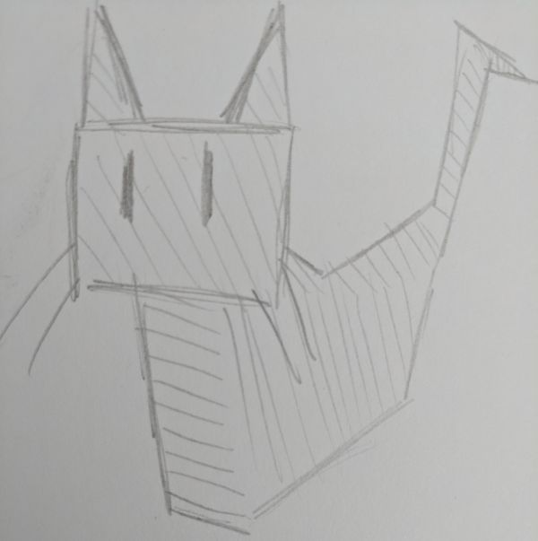
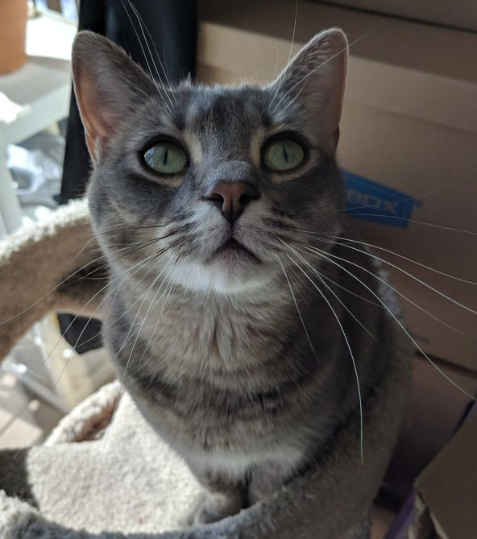
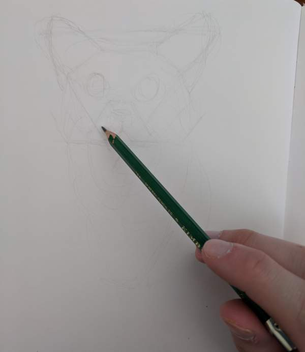
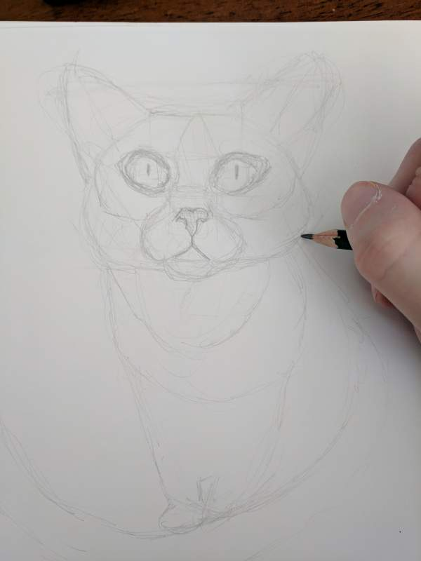
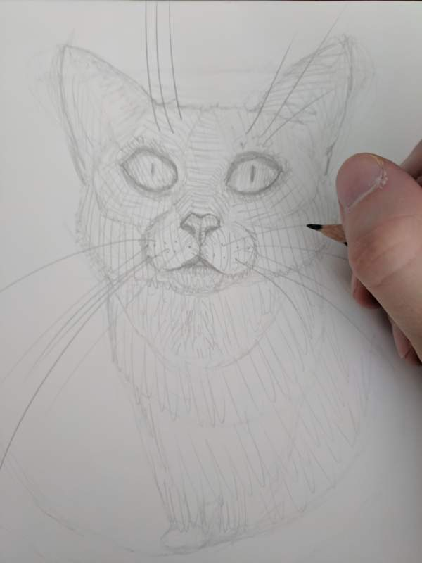

Home
About
Contact
Learn to draw things!

Things can be hard to draw. I'll show you how to do it like a pro!
Ingredients for a successful drawing
Pencil
Eraser
Paper
Reference Image or object to draw
Hundreds of hours of focused drawing experience
Some amount of self-loathing. Keeps the critical eye sharp
My reference for example

Step 1!

This step is all about getting the basic shapes down. You need to hold your pencil exactly as shown or the art gods will punish you. Use light strokes to begin to define the shapes you see in your reference. Things don't have to be exact here as further steps will refine the drawing.
Step 2!

In the second step we will begin to refine the drawing mess we have made. Inaccurate original lines actually help to add life to the drawing as you begin to commit to darker lines. You can now hold your pencil more like a normal person without fear of art god punishment. Think about proportion and spacing in relation to your reference.
Step 3!

Step 3, otherwise known as the final step. Here we add detail to the piece. The mistakes made have cascaded to this point, but you can't back out now. Use lines to accentuate the form's contour. Use line density to create texture or imply a light source. If you're like me and not satisfied with your drawing do the following- realize that you haven't been putting enough time into drawing and strive to study more. Good luck.